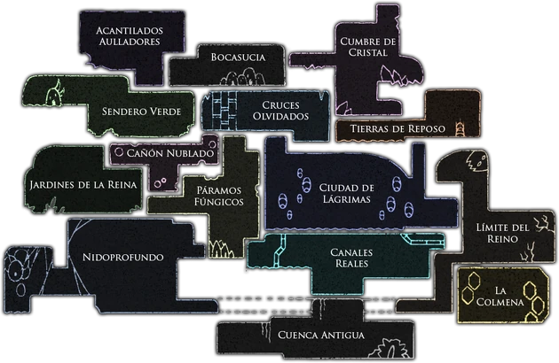
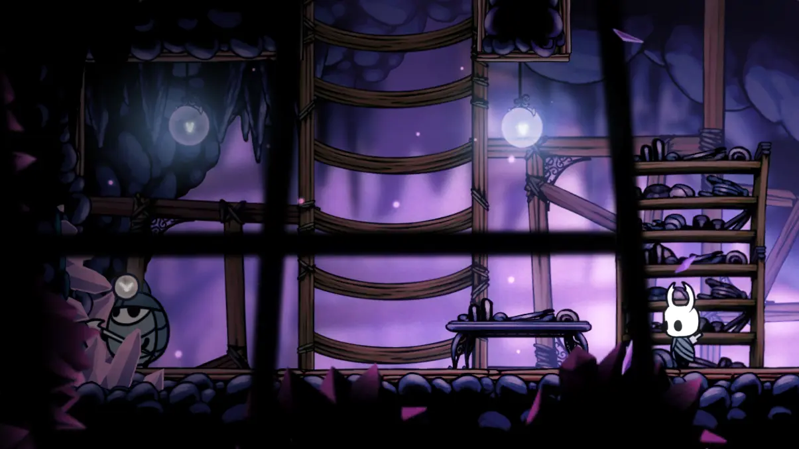
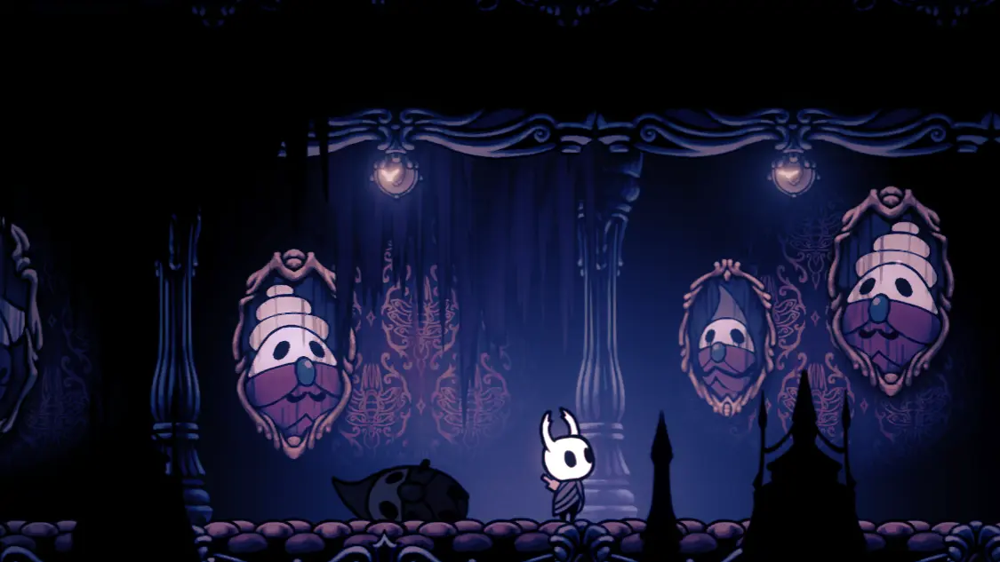
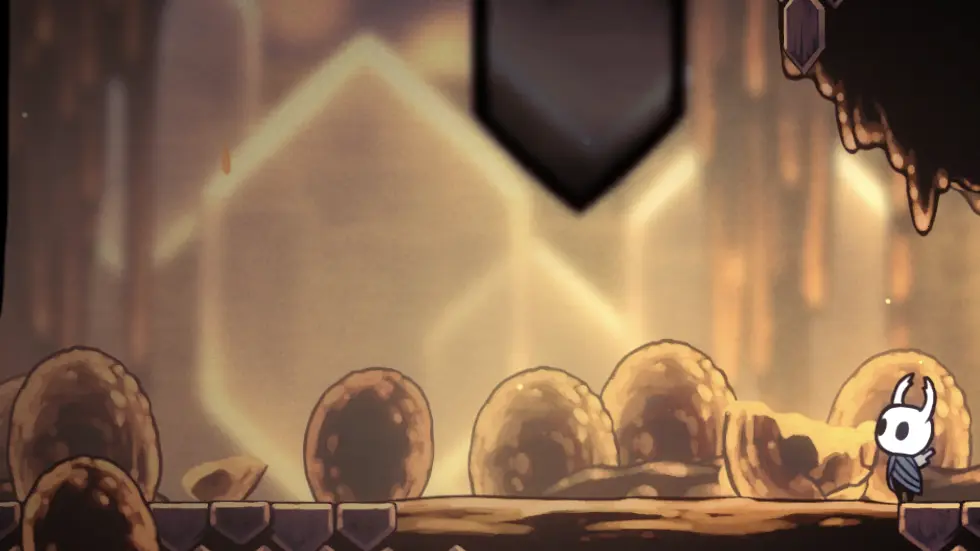
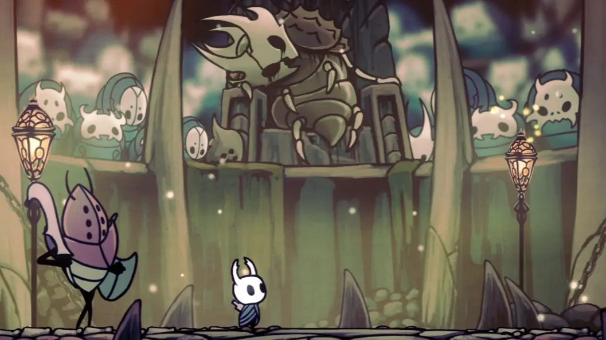

En Hallownest, las actividades que realizaban sus habitantes están ligadas al diseño de las áreas y a los elementos de la historia. Aquí tienes un resumen de las principales actividades que ocurrían (o aún ocurren) en las distintas regiones del reino
Cumbre de cristal
Los insectos de esta zona trabajaban en minas para extraer los cristales que ahora adornan las paredes y el suelo de toda el área. Se utilizaban herramientas y maquinaria para procesar los cristales. Sin embargo, parece que muchos de los mineros fueron afectados por la infección, convirtiéndose en enemigos hostiles.


Ciudad de lagrimas
Vida urbana, comercio y administración del reino. Como el centro del reino, la ciudad albergaba la realeza y a las clases trabajadoras. Aquí se llevaban a cabo ceremonias y producción artesanal. Aquí residía el Rey Pálido y sus cortesanos.
Colmena
Producción de miel y vida comunitaria. La colmena es el hogar de una comunidad de abejas que trabajan juntas para producir miel y mantener su estructura. Aunque son agresivas hacia intrusos, muestran una organización estructurada.


Coliseo de los insensatos
Es un coliseo donde los habitantes de Hallownest se enfrentan a desafíos extremos en combates a muerte contra olas de enemigos. Aquí, los participantes luchan por la gloria y, posiblemente, para obtener recompensas como dinero y otros objetos.